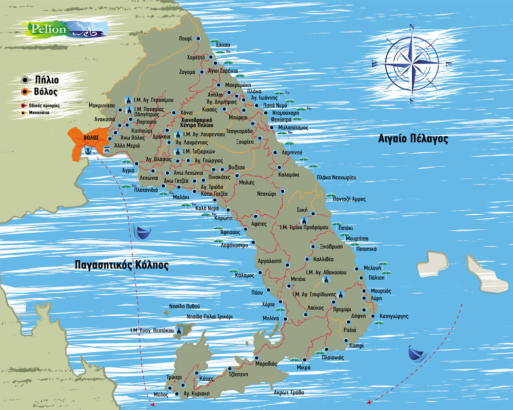

Εν πάση περιπτώσει, η δράση των πειρατών είχε ως αποτέλεσμα Μονές και οικισμοί να εγκαταλειφθούν ή να παρακμάσουν, και κάτοικοι και μοναχοί μετακινήθηκαν σε σημεία με μεγαλύτερο υψόμετρο, και άρα απρόσβλητα από τους πειρατές. Χαρακτηριστική περίπτωση αποτελεί το κεφαλοχώρι της Αργαλαστής, το οποίο αν και βρίσκεται σε σχετικά χαμηλό υψόμετρο (200 – 300 μέτρα), λόγω της τοποθεσίας του δεν είναι σχεδόν καθόλου ορατό από την θάλασσα. Ακόμα σώζονται, ως ερείπια, σε διάφορες απομονωμένες τοποθεσίες του Πηλίου, πύργοι ή οχυρώματα (άγνωστα στους τουρίστες), για να θυμίζουν αυτήν την ταραγμένη και αρκετά σκοτεινή εποχή.
Σήμερα, οι μόνοι που έχουν μείνει για να επιτελούν το θεάρεστο έργο των πειρατών,
είναι τα πολλά αγριογούρουνα και οι αλεπούδες (προφέρονται «αγρ γρούν» και «αλιπούδς»),
που καταστρέφουν τις καλλιέργειες και αποδεκατίζουν τα κοτέτσια αντίστοιχα, των λιγοστών μόνιμων κατοίκων.
